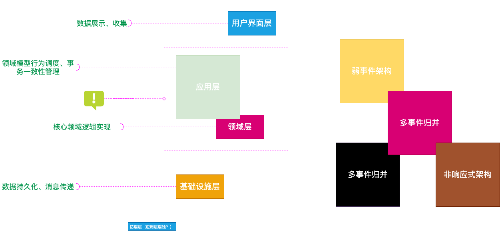

架构演进之路，路漫漫其修远兮
架构关乎不变的顶层设计抽象。
架构关乎组件（元素）、交互（连接器）、功能（function or feature）、约束（constraint 面向当前、未来-下一场景、下一个规模、下一个地域或国家）
洋葱架构的另一种解读
系统是洋葱，看似有边界，但是每次改动总是端到端，过程让⼈人泪流满⾯面。
系统的本质
功能与质量量的结合体：功能是核心价值 + 质量实现增值或保值。
系统的复杂性
过程与过程数据

易变性

系统复杂度 = 功能的数量 * 功能的过程
《人月神话》：本质复杂度(Essential Complexity)和偶然复杂度(Accident Complexity)。
解法
分离业务复杂度和系统复杂度。
回归面向对象的本质，重拾抽象思维的价值


领域驱动设计
战略设计

需求分析

词汇提取

领域语⾔定义-合理的上下⽂和领域划分
顺序-时间-追溯需求建模.drawio
合理的上下文和领域划分.drawio
战术设计

分层结构与三模型分离

突破技术复杂度

技术能⼒分离与建设
EDA
[EDA 架构.drawio](EDA 架构.drawio)

OEF(Orchestration Execution Framework)服务编配框架
EOF.drawio

[EOF 实战.drawio](EOF 实战.drawio)